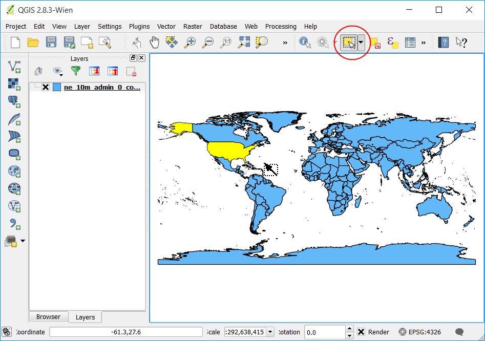
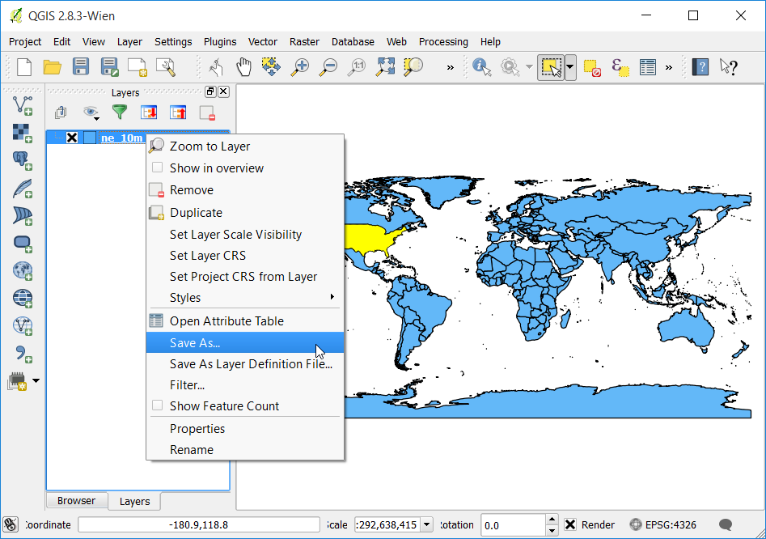
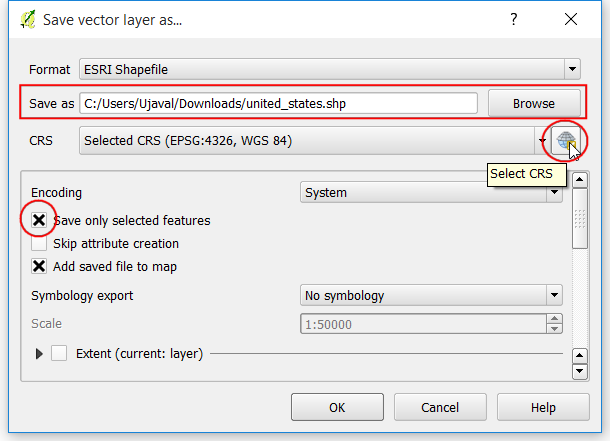
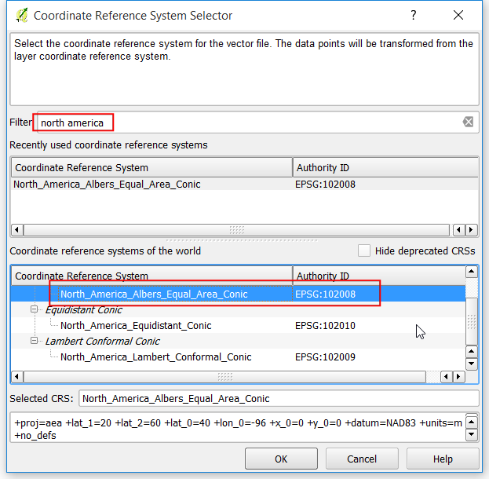
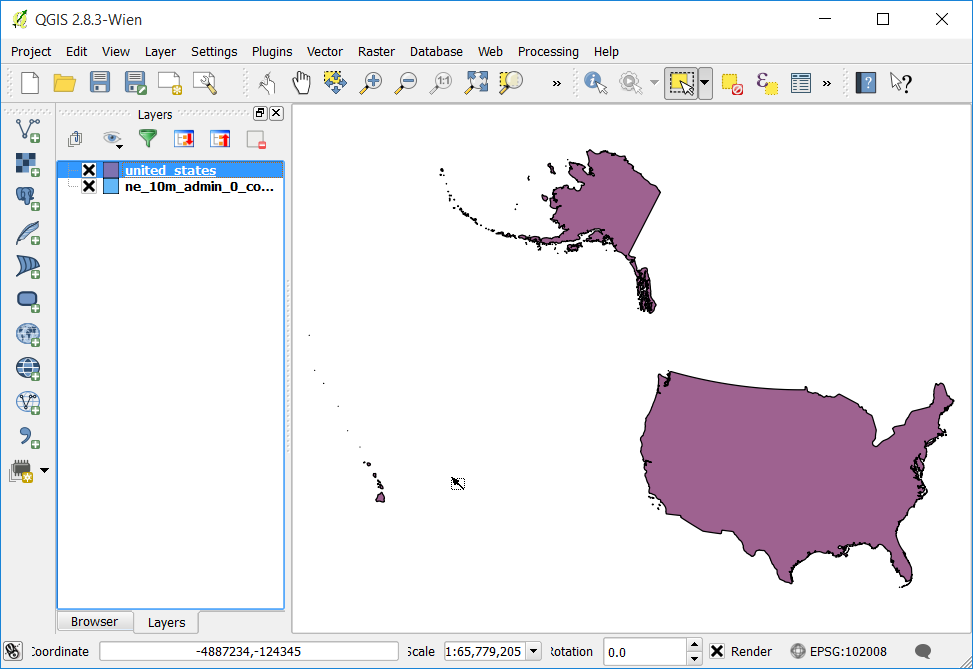
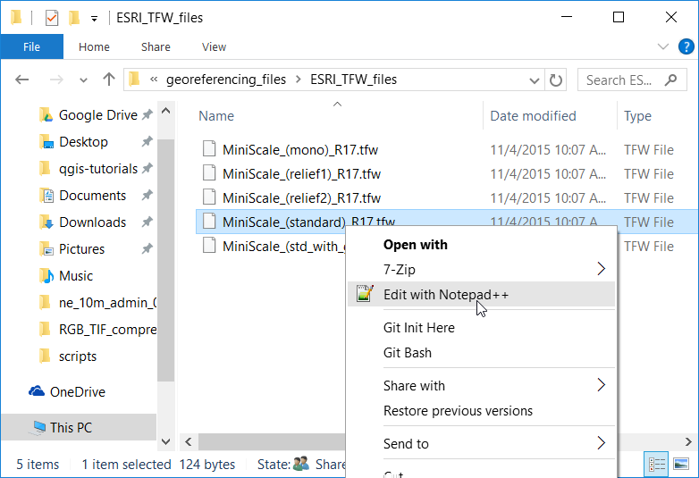
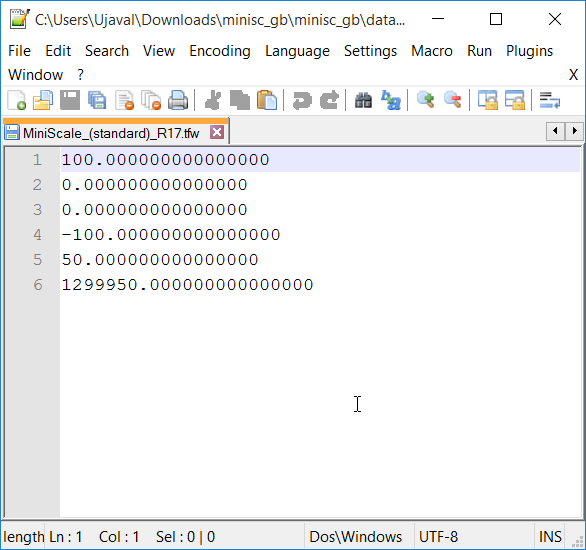

Lucrul cu Proiecții
Proiecțiile hărții - sau Sistemul de Coordonate de Referință (CRS) - de multe ori cauzează o mulțime de frustrări în lucrul cu datele GIS. Dar înțelegerea corectă a conceptelor și accesul la uneltele potrivite, va facilita utilizarea proiecțiilor. În acest tutorial, vom explora modul în care lucrează proiecțiile în QGIS, învățând instrumentele disponibile pentru vectori și rastere - în special re-proiectarea datelor vectoriale și a celor raster, permițând re-proiectarea “din zbor” și atribuirea unei proiecții datelor care nu posedă una deja.
Privire de ansamblu asupra activității
Sarcina este de a reproiecta și de a suprapune straturile de date ale diferitelor proiecții în QGIS.
Alte competențe pe care le veți dobândi
Folosiți fișierele .tfw pentru a georeferenția rasterele.
Cum să salvați entitățile selectate dintr-un strat, într-altul nou.
Cum să vizualizați informațiile metadatelor pentru straturile din QGIS.
Procedura
Deschideți QGIS. Mergeți la

Navigați la fișierul descărcat, ne_10m_admin_0_countries.zip, apoi faceți clic pe Open.

În partea de jos a ferestrei QGIS, veți observa eticheta: guilabel: Coordonate. După cum mutați cursorul peste hartă, veți vedea coordonatele X și Y, în acea locație. În colțul din dreapta jos, veți vedea EPSG:4326. Acesta este codul pentru CRS-ul curent (Proiecția) pentru proiect.

După cum veți vedea mai târziu, CRS-ul proiectului nu corespunde CRS-ului stratului. Pentru a determina proiecția unui strat, putem privi în metadate. Faceți clic dreapta pe stratul ne_10m_admin_0_countries și selectați Proprietăți.

Mergeți în fila Metadate din dialogul Proprietăților Stratului. Extindeți secțiunea Proprităților. În partea de jos, veți vedea definiția pentru proiecție sub Sistemul de Referință Spațială a Stratului. Această definiție este în Formatul PROJ.4.

Acum, să vedem cum putem schimba proiecția stratului. Această operațiune se numește Re-Proiectare. De asemenea, mai degrabă decât re-proiectarea întregului strat, putem re-proiecta unele caracteristici din strat. Folosiți instrumentul de Selectare a entităților după suprafață sau printr-un unic clic, apoi faceți clic pe entitatea Statele Unite ale Americii, pentru a o selecta.

Faceți clic dreapta pe stratul ne_10m_admin_0_countries și selectați Save Selection As.

În dialogul de Salvare strat vectorial ca..., denumiți stratul de ieșire united_states.shp. De asemenea, bifați caseta Salvare doar entități selectate. Acest lucru vă asigură că numai entitatea selectată va fi re-proiectată și exportată. Apoi, vom alege noua proiecție pentru strat. Faceți clic pe butonul Selectare CRS.

În dialogul de Selectare a Sistemului de Coordinate de Referință, introduceți north america în caseta de căutare Filtrare. Parcurgeți rezultatele și selectați proiecția North_America_Albers_Equal_Area_Conic (EPSG:102008) apoi faceți clic pe OK.
Note
Am ales proiecția Albers Equal Area Conic pentru acest tutorial, atât timp cât este o alegere populară pentru proeicția hărților tematice din SUA. Alegerea proiecției, în cazul dvs., depinde de o mulțime de factori. Parcurgeți acest ghid pentru o bună imagine de ansamblu a Proiecțiilor.

Veți vedea noul CRS selectat în dialogul Save vector layer as.... Clic pe OK.

După ce stratul de re-proiectat se încarcă, veți observa că noul strat united_states se suprapune perfect deasupra stratului ne_10m_admin_0_countries - chiar dacă ele sunt în proiecții diferite. Acest lucru se datorează faptului că QGIS are o caracteristică denumită Transformare Din-Zbor a CRS-ului. Textul proiecției, din partea de jos-dreapta a QGIS, are înscris de acum acronimul OTF lângă EPSG:4326`. Pentru a afla mai multe, haideți să explorăm opțiunea CRS din QGIS.

Mergeți la .

Mergeți la fila CRS din dialogul Opțiuni. Veți vedea că, în mod implicit, este Activată reproiectarea automată ‘din zbor’ dacă straturile au CRS-uri diferite. Acest lucru înseamnă că, atunci când QGIS detectează că ați încărcat straturi cu CRS-uri diferite, le va re-proiecta automat înapoi la un CRS comun, astfel încât acestea vor aliniate unele față de celelalte. Faceți clic pe OK.

Haideți să dezactivăm Transformarea Din-Zbor a CRS-ului și să vedem ce se întâmplă. Faceți clic pe textul CRS-ul curent din colțul din dreapta-jos.

În dialogul Proprietățile Proiectului, debifați caseta de Activare a transformării ‘din zbor’ a CRS-ului, apoi faceți clic pe OK.

Înapoi în fereastra principală QGIS, veți vedea că harta frumoasă a lumii a dispărut. Acest lucru se datorează faptului că CRS-ul proiectului a fost schimbat la North_America_Albers_Equal_Area_Conic, iar coordonatele și scara sunt diferite acum. Faceți clic dreapta pe stratul united_states, apoi selectați Transfocare pe Strat.

Acum, veți vedea Statele Unite ale Americii în proiecția selectată. Observați că entitățile din ne_10m_admin_0_countries nu apar în canevas, atât timp cât acestea sunt într-un spațiu de coordonate diferit de cel al stratului united_states. Mergeți înapoi la dialogul Proprietăților Proiectului și activați opțiunea de Transformare ‘din zbor’ a CRS-ului pentru restul tutorialului.

Acum, haideți să schimbăm viteza, și să adăugăm un strat raster proiectului. Navigați la directorul în care ați extras fișierul minisc_gb.zip. Localizați folderul RGB_TIF_COMPRESSED, care conține fișierele tif. Veți observa că fișierele de imagine sunt fișiere TIF simple, nu fișiere GeoTIFF. Asta înseamnă că nu avem nici o informație despre proiecție. Pentru a utiliza aceste imagini într-un GIS, trebuie să le georeferențiați. Georeferențierea presupune 2 tipuri de informații - extensiile imaginii și proiecția. De obicei, extensiile sunt stocate într-un fișier cunoscut sub numele de Fișier World, acestea fiind de tip .tfw sau .jgw. Cele mai multe softuri GIS, inclusiv QGIS, pot folosi informațiile stocate în fișierele world, atât timp cât acestea sunt stocate în același director ca și imaginea originală, având același nume. Fișierele .tfw pentru fișierele raster MiniScale se află într-un folder separat, denumit georeferencing_files.

Mergeți în folderul ESRI_TFW_FILES din cadrul georeferencing_files. În fișierele .tfw textul este stocat în clar. Deschideți unul dintre fișierele .tfw într-un editor de text.

Fișierele world conțin 6 linii cu diverse numere. După cum se explică mai jos, fiecare linie reprezintă câteva informații despre fișierul raster. Cunoașterea acestui format este utilă, pentru că unele date nu vin însoțite de fișierele world, și va trebui să le creați manual, utilizând informațiile furnizate.
Line 1: A: pixel size in the x-direction in map units/pixel
Line 2: D: rotation about y-axis
Line 3: B: rotation about x-axis
Line 4: E: pixel size in the y-direction in map units
Line 5: C: x-coordinate of the center of the upper left pixel
Line 6: F: y-coordinate of the center of the upper left pixel

Copiați fișierul MiniScale_(standard)_R17.tfw din folderul georeferencing_files în folderul RGB_TIF_COMPRESSED. În acest mod, QGIS și fișierele .tfw și .tif, aflate în același director,

În fereastra principală a QGIS, mergeți la . Navigați la fișierul MiniScale_(standard)_R17.tif, apoi faceți clic pe Open.

Fișierele Ordnance Survey sunt în proiecția British National Grid. În dialogul de Selectare a Sistemului de Coordonate de Referință, căutați british national, apoi alegeți CRS-ul OSGB 1936 / British National Grid (EPSG:27700) CRS. Clic pe OK.

O dată ce s-a încărcat stratul MiniScale_(standard)_R17, faceți clic-dreapta pe el și selectați Zoom to layer.

Veți vedea stratul raster suprapus pe partea superioară a stratului vectorial ne_10m_admin_0_countries. Din moment ce avem OTF activat cu EPSG:4326, stratul MiniScale_(standard)_R17 va fi reproiectat dinamic la EPSG:4326, apoi va fi prezentat în același spațiu de coordonate ca și celălalt strat.